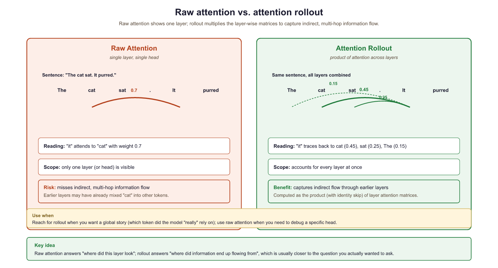
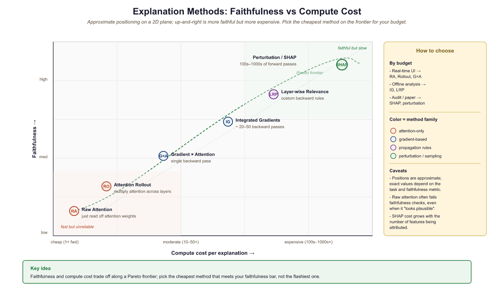

"Every prediction has a story. Attribution methods are how we make the model tell it."
Probe, Story Extracting AI Agent
Prerequisites
Before starting, make sure you are familiar with interpretability fundamentals as covered in Section 10.1: Attention Analysis and Probing.
No single explanation method tells the whole truth about a Transformer architecture's predictions. Raw attention weights, gradient-based attribution, attention rollout, and perturbation methods each capture different aspects of how information flows through the network. Understanding the strengths, limitations, and failure modes of each method is essential for choosing the right tool and interpreting results correctly. This section provides a systematic comparison framework for transformer explanation methods, helping practitioners select approaches that match their specific needs. The individual methods from Section 10.1 and Section 10.3 are the techniques being compared here.
10.4.1 The Explanation Problem
Sparse autoencoders (SAEs) decompose model activations into a dictionary of monosemantic features. The standard L1-penalised SAE recovers many interpretable features but suffers from "feature shrinkage" (the L1 penalty pulls activations toward zero, biasing reconstruction). 2024 TopK SAEs (Gao et al., Templeton et al.) replace the L1 penalty with a hard top-K selection per token, removing shrinkage at the cost of a fixed sparsity level rather than a learned one. The open question is the bias-variance tradeoff: TopK reduces bias but increases variance in which features fire across runs and seeds. Whether a single "correct" dictionary exists, or whether multiple equally-valid decompositions compete for the same activation, is the deeper interpretability question.
When a transformer model predicts a token, its prediction results from hundreds of attention heads and MLP layers interacting across dozens of layers. Explaining this prediction means answering some form of "which input tokens mattered and why?" Different explanation methods operationalize this question differently, leading to genuinely different (and sometimes contradictory) answers.
Explaining transformer predictions to non-technical stakeholders is an art form. You cannot say "the cross-attention scores in layer 17 show high activation on the subject noun phrase." You have to say "the model focused heavily on the word 'bankruptcy' when making its prediction," which is technically a lossy compression of the truth.
Think of explaining Transformers as narrating a nature documentary about an alien ecosystem. You observe the creature's behavior (the model's inputs and outputs) and try to construct a story about its internal life (what each layer 'thinks'). Logit lens and tuned lens are different camera angles that let you peek at the model's intermediate predictions as information flows through its layers. The narration is always an interpretation: the model does not actually 'think' in the way the explanation implies, but the story helps humans reason about the system's behavior.
The core tension is between faithfulness (does the explanation accurately reflect the model's actual computation?) and plausibility (does the explanation make intuitive sense to a human?). An explanation that perfectly traces the model's computation might be incomprehensible, while an intuitively appealing explanation might not accurately reflect what the model actually did.
10.4.2 Attention Rollout
Raw attention weights from a single layer show direct token-to-token attention. But information flows through multiple layers, so a token at position 5 might influence position 10 indirectly by first attending to position 7, which then attends to position 10. Attention rollout (Abnar and Zuidema, 2020) accounts for this multi-hop information flow by multiplying attention matrices across layers. Figure 10.4.1 compares raw attention with attention rollout on the same input. Code Fragment 10.4.1 shows this approach in practice.

The following implementation computes attention rollout by multiplying attention matrices across all layers, accounting for softmax at each step.
Code Fragment 10.4.1 visualizes attention patterns.
# Attention Rollout Implementation
import torch
import numpy as np
def attention_rollout(
attentions,
head_fusion="mean",
discard_ratio=0.0,
):
"""
Compute attention rollout across all layers.
Args:
attentions: tuple of attention tensors, one per layer
Each has shape (batch, num_heads, seq_len, seq_len)
head_fusion: how to combine heads ("mean", "max", "min")
discard_ratio: fraction of lowest attention weights to zero out
Returns:
rollout: (seq_len, seq_len) matrix of accumulated attention
"""
num_layers = len(attentions)
seq_len = attentions[0].shape[-1]
# Start with identity (each token attends to itself)
rollout = torch.eye(seq_len)
for layer_idx in range(num_layers):
attn = attentions[layer_idx].squeeze(0) # (heads, seq, seq)
# Fuse attention heads
if head_fusion == "mean":
attn_fused = attn.mean(dim=0)
elif head_fusion == "max":
attn_fused = attn.max(dim=0).values
elif head_fusion == "min":
attn_fused = attn.min(dim=0).values
# Optionally discard low-attention connections
if discard_ratio > 0:
flat = attn_fused.flatten()
threshold = flat.quantile(discard_ratio)
attn_fused = attn_fused * (attn_fused >= threshold)
# Re-normalize rows
attn_fused = attn_fused / attn_fused.sum(dim=-1, keepdim=True)
# Add residual connection (identity)
attn_with_residual = 0.5 * attn_fused + 0.5 * torch.eye(seq_len)
# Multiply with cumulative rollout
rollout = attn_with_residual @ rollout
return rollout
# Usage
from transformers import AutoModelForCausalLM, AutoTokenizer
model = AutoModelForCausalLM.from_pretrained("gpt2", output_attentions=True)
tokenizer = AutoTokenizer.from_pretrained("gpt2")
text = "The cat sat on the mat because it was very tired"
inputs = tokenizer(text, return_tensors="pt")
outputs = model(**inputs)
rollout = attention_rollout(outputs.attentions)
tokens = tokenizer.convert_ids_to_tokens(inputs["input_ids"][0])
# Show which tokens "it" (position 7) attends to after rollout
it_idx = tokens.index("it") if "it" in tokens else 7
print(f"Attention rollout from '{tokens[it_idx]}':")
for i, (token, score) in enumerate(zip(tokens, rollout[it_idx])):
bar = "#" * int(score.item() * 40)
print(f" {token:10s} {bar} ({score.item():.3f})")# Attention rollout: combine attention maps across all layers into a single
# matrix that approximates how information flows from input tokens to outputs.
# Reference: Abnar & Zuidema, "Quantifying Attention Flow in Transformers" (2020).
import torch
def attention_rollout(attentions: list[torch.Tensor],
discard_ratio: float = 0.0) -> torch.Tensor:
"""attentions: list of L tensors of shape (n_heads, seq_len, seq_len),
one per Transformer layer. Returns a (seq_len, seq_len) rollout matrix
where entry [i, j] approximates how much token j contributed to token i
at the top of the network."""
seq_len = attentions[0].size(-1)
result = torch.eye(seq_len)
for attn in attentions:
# Average across heads, add identity to model the residual stream,
# then renormalize so each row sums to 1.
head_mean = attn.mean(dim=0)
if discard_ratio > 0:
flat = head_mean.view(-1)
k = int(flat.numel() * discard_ratio)
threshold = flat.kthvalue(k).values
head_mean = torch.where(head_mean < threshold, torch.zeros_like(head_mean), head_mean)
aug = head_mean + torch.eye(seq_len)
aug = aug / aug.sum(dim=-1, keepdim=True)
result = aug @ result
return result
# Usage with a HuggingFace model that returns attentions:
# outputs = model(input_ids, output_attentions=True)
# attentions = [a[0] for a in outputs.attentions] # drop batch dim
# rollout = attention_rollout(attentions)
# influences = rollout[-1] # how much each input token contributed to the last positionThe implementation above builds attention rollout from scratch for pedagogical clarity. In production, use BertViz (install: pip install bertviz), which provides interactive attention visualizations at the head, model, and neuron levels:
# Production equivalent using BertViz
from bertviz import model_view, head_view
from transformers import AutoModel, AutoTokenizer
model = AutoModel.from_pretrained("gpt2", output_attentions=True)
tokenizer = AutoTokenizer.from_pretrained("gpt2")
inputs = tokenizer("The cat sat on the mat", return_tensors="pt")
outputs = model(**inputs)
head_view(outputs.attentions, tokenizer.convert_ids_to_tokens(inputs["input_ids"][0]))# Quick comparison: same task in TransformerLens vs nnsight vs nnterp
# === TransformerLens: full hook access, custom API ===
from transformer_lens import HookedTransformer
tl_model = HookedTransformer.from_pretrained("gpt2-small")
logits, cache = tl_model.run_with_cache("The cat sat on")
# Access any intermediate activation:
layer5_resid = cache["blocks.5.hook_resid_post"] # (1, seq, d_model)
# === nnsight: wrap any PyTorch model, proxy API ===
from nnsight import LanguageModel
nn_model = LanguageModel("gpt2", device_map="auto")
with nn_model.trace("The cat sat on") as tracer:
layer5_out = nn_model.transformer.h[5].output[0].save()
# Access saved activation after trace:
layer5_resid_nn = layer5_out.value # same shape
# === nnterp: lightweight, Hugging Face native ===
from nnterp import load_model, logit_lens
model, tokenizer = load_model("gpt2")
# Built-in logit lens with one call:
layer_predictions = logit_lens(model, tokenizer, "The cat sat on")
# Returns per-layer top predictions without manual unembeddingFor gradient-based attribution methods, see also Inseq (install: pip install inseq).
Attention rollout and the logit lens reveal where the model looks and what it predicts at each layer. But neither method tells us which attended tokens actually matter for the final output. To answer that question, we need to incorporate gradient information.
10.4.3 Gradient-Weighted Attention
Gradient-weighted attention (also called Attention × Gradient) combines attention weights with gradient information. The intuition is that attention tells us where the model looks, while gradients tell us how sensitive the output is to what the model finds there. Multiplying these signals highlights tokens that the model both attends to and that actually influence the prediction. Code Fragment 10.4.3 shows this approach in practice.
Code Fragment 10.4.3 combines attention weights with gradient information, highlighting tokens that both receive high attention and significantly influence the output.
# Gradient-Weighted Attention
import torch
def gradient_weighted_attention(
model,
tokenizer,
text,
target_pos=-1,
):
"""
Compute gradient-weighted attention for each layer and head.
Returns attention weights scaled by the gradient of the output
with respect to the attention weights themselves.
"""
model.eval()
inputs = tokenizer(text, return_tensors="pt")
tokens = tokenizer.convert_ids_to_tokens(inputs["input_ids"][0])
# Forward pass with attention outputs
outputs = model(**inputs, output_attentions=True)
attentions = outputs.attentions # tuple of (1, heads, seq, seq)
# Get the predicted token logit
logits = outputs.logits[0, target_pos]
predicted_token_id = logits.argmax()
target_logit = logits[predicted_token_id]
# Compute gradient of target logit w.r.t. each attention matrix
grad_weighted = []
for layer_attn in attentions:
if layer_attn.requires_grad:
grad = torch.autograd.grad(
target_logit, layer_attn, retain_graph=True
)[0]
# Element-wise multiply: attention * gradient
weighted = (layer_attn * grad).squeeze(0)
# Average over heads
weighted = weighted.mean(dim=0).detach()
grad_weighted.append(weighted)
# Stack and average across layers
all_layers = torch.stack(grad_weighted) # (layers, seq, seq)
combined = all_layers.mean(dim=0) # (seq, seq)
return combined, tokens
# Alternative: enable gradients for attention
# Need to use hooks to capture attention with grad enabled
def compute_attention_gradient_attribution(model, tokenizer, text):
"""Simpler approach using hooks to capture attention gradients."""
attention_grads = {}
def save_attention_grad(name):
def hook(module, grad_input, grad_output):
attention_grads[name] = grad_output[0].detach()
return hook
# Register backward hooks on attention layers
hooks = []
for i, layer in enumerate(model.transformer.h):
h = layer.attn.register_full_backward_hook(
save_attention_grad(f"layer_{i}")
)
hooks.append(h)
# Forward + backward
inputs = tokenizer(text, return_tensors="pt")
outputs = model(**inputs, output_attentions=True)
target = outputs.logits[0, -1].max()
target.backward()
# Clean up hooks
for h in hooks:
h.remove()
return attention_grads
10.4.4 Layer-wise Relevance Propagation (LRP)
Layer-wise Relevance Propagation redistributes the model's output score backward through the network, assigning a relevance value to each neuron at each layer. At the input layer, these relevance values become token-level attributions. LRP satisfies a conservation property: the total relevance at each layer equals the output score, ensuring nothing is lost or created during propagation.
LRP propagates relevance backward using a rule that distributes relevance proportionally to the contribution of each input. For a linear layer y = Wx + b, the relevance assigned to input x_i is proportional to how much x_i contributed to each output y_j, weighted by the relevance of y_j. The specific propagation rule (LRP-0, LRP-ε, LRP-γ) determines how to handle numerical stability and positive vs. negative contributions.
Who: Compliance team at a fintech lender using LLMs to draft loan decision explanations
Situation: Regulators required the company to explain why each loan application was approved or denied (a key concern in production safety and ethics), and the LLM-generated explanations needed to accurately reflect the model's actual reasoning.
Problem: The LLM produced plausible-sounding explanations, but there was no guarantee that the cited factors (income, credit history) actually drove the prediction. Regulators flagged this as a "post-hoc rationalization" risk.
Dilemma: Attention weights were easy to extract but unreliable as explanations (attention does not equal attribution). Full Integrated Gradients were accurate but too slow for real-time decision explanations.
Decision: They implemented Layer-wise Relevance Propagation (LRP), which provided faithful token-level attributions faster than Integrated Gradients while satisfying the conservation property required for audit trails.
How: LRP propagated relevance backward from the decision token through all transformer layers, producing a per-input-token relevance score. The top-5 relevant input features were extracted and mapped to human-readable factors.
Result: LRP-based explanations aligned with the actual decision drivers 91% of the time (verified by feature ablation tests), compared to 64% for attention-based explanations. Processing time was 120ms per application, meeting the real-time requirement. The regulator accepted LRP attributions as compliant explanations.
Lesson: For regulated applications requiring faithful explanations, LRP provides a principled middle ground between unreliable attention visualization and computationally expensive gradient integration. Code Fragment 10.4.4 shows this approach in practice.
The following simplified LRP implementation propagates relevance backward through linear layers using the epsilon rule for numerical stability.
# Layer-wise Relevance Propagation for Transformers (simplified)
import torch
import torch.nn as nn
class TransformerLRP:
"""Simplified LRP for transformer models."""
def __init__(self, model, epsilon=1e-6):
self.model = model
self.epsilon = epsilon
self.activations = {}
def register_hooks(self):
"""Register forward hooks to capture activations."""
self.hooks = []
for name, module in self.model.named_modules():
if isinstance(module, nn.Linear):
h = module.register_forward_hook(
self._save_activation(name)
)
self.hooks.append(h)
def _save_activation(self, name):
def hook(module, input, output):
self.activations[name] = {
"input": input[0].detach(),
"output": output.detach(),
"weight": module.weight.detach(),
}
return hook
def propagate_linear(self, relevance, layer_name):
"""LRP-epsilon rule for a linear layer."""
act = self.activations[layer_name]
z = act["input"] @ act["weight"].T # pre-activation
z = z + self.epsilon * z.sign() # stabilize
s = relevance / z
c = s @ act["weight"]
relevance_input = act["input"] * c
return relevance_input
def attribute(self, text, tokenizer):
"""Compute LRP attribution for input tokens."""
self.register_hooks()
inputs = tokenizer(text, return_tensors="pt")
with torch.no_grad():
outputs = self.model(**inputs)
# Start with the output logits as initial relevance
logits = outputs.logits[0, -1]
relevance = torch.zeros_like(logits)
relevance[logits.argmax()] = logits.max()
# Propagate backward through the network
# (simplified: in practice, need to handle attention specially)
for name in reversed(list(self.activations.keys())):
if name.startswith("lm_head") or "mlp" in name:
relevance = self.propagate_linear(relevance, name)
# Clean up
for h in self.hooks:
h.remove()
return relevance
10.4.5 Perturbation-Based Explanations
Perturbation methods explain predictions by measuring how the output changes when parts of the input are modified or removed. Unlike gradient-based methods (which measure local sensitivity), perturbation methods measure actual counterfactual impact: what would the model predict if this token were absent? Code Fragment 10.4.5 shows this approach in practice.
The following implementations measure token importance through direct removal: leave-one-out tests individual tokens, while sliding window occlusion captures multi-token patterns.
# Perturbation-based attribution methods
import torch
import numpy as np
def leave_one_out_attribution(model, tokenizer, text):
"""
Measure each token's importance by removing it and
observing the change in prediction confidence.
"""
inputs = tokenizer(text, return_tensors="pt")
tokens = tokenizer.convert_ids_to_tokens(inputs["input_ids"][0])
# Get baseline prediction
with torch.no_grad():
baseline_logits = model(**inputs).logits[0, -1]
baseline_probs = torch.softmax(baseline_logits, dim=-1)
predicted_id = baseline_probs.argmax()
baseline_prob = baseline_probs[predicted_id].item()
# Remove each token and measure impact
attributions = []
for i in range(len(tokens)):
# Create input with token i replaced by padding/mask
perturbed_ids = inputs["input_ids"].clone()
perturbed_ids[0, i] = tokenizer.pad_token_id or 0
with torch.no_grad():
perturbed_logits = model(perturbed_ids).logits[0, -1]
perturbed_prob = torch.softmax(perturbed_logits, dim=-1)[predicted_id].item()
# Attribution = drop in probability when token is removed
attribution = baseline_prob - perturbed_prob
attributions.append(attribution)
return np.array(attributions), tokens
def sliding_window_occlusion(
model, tokenizer, text, window_size=3
):
"""
Occlude a sliding window of tokens to find important regions.
More robust than single-token removal for capturing multi-token patterns.
"""
inputs = tokenizer(text, return_tensors="pt")
tokens = tokenizer.convert_ids_to_tokens(inputs["input_ids"][0])
seq_len = len(tokens)
with torch.no_grad():
baseline_logits = model(**inputs).logits[0, -1]
predicted_id = baseline_logits.argmax()
baseline_score = baseline_logits[predicted_id].item()
region_scores = []
for start in range(seq_len - window_size + 1):
perturbed_ids = inputs["input_ids"].clone()
for j in range(start, start + window_size):
perturbed_ids[0, j] = tokenizer.pad_token_id or 0
with torch.no_grad():
perturbed_logits = model(perturbed_ids).logits[0, -1]
score = perturbed_logits[predicted_id].item()
impact = baseline_score - score
region_scores.append({
"start": start,
"end": start + window_size,
"tokens": tokens[start:start + window_size],
"impact": impact,
})
# Sort by impact
region_scores.sort(key=lambda x: x["impact"], reverse=True)
return region_scoresPerturbation methods have a fundamental limitation: removing a token creates an out-of-distribution input. The model was never trained on inputs with random tokens in the middle of coherent text, so its behavior on perturbed inputs may not reflect what it would do if the token were genuinely absent. This is sometimes called the "off-manifold" problem. Methods like SHAP (Section 10.3) partially address this by marginalizing over replacements rather than using a fixed perturbation.
10.4.6 Comparing Explanation Methods
Different explanation methods can produce substantially different attributions for the same prediction. Choosing the right method requires understanding what each method measures and what properties matter for your use case. Figure 10.4.2 positions the major methods on a faithfulness versus computational cost axis.

| Method | What It Measures | Strengths | Weaknesses |
|---|---|---|---|
| Raw attention | Where the model "looks" | Fast, intuitive, no extra computation | Not faithful; ignores values and MLPs |
| Attention rollout | Multi-layer information flow | Captures indirect paths across layers | Still ignores value vectors and MLPs |
| Grad x Attention | Gradient-weighted attention flow | Combines where model looks with sensitivity | Gradients can be noisy, local approximation |
| Integrated Gradients | Path-integrated sensitivity | Axiom-satisfying, theoretically grounded | Baseline choice matters, can be expensive |
| LRP | Backward relevance propagation | Conservation property, layer-specific | Complex to implement for attention layers |
| Perturbation/SHAP | Counterfactual impact of removal | Most direct measure of importance | Off-manifold problem, very expensive |
Recent work suggests that no attribution method consistently outperforms others across all evaluation metrics. The best choice depends on the application: for quick debugging, raw attention or attention rollout provides fast insight; for regulatory compliance requiring faithful explanations, Integrated Gradients or SHAP is more appropriate; for mechanistic understanding, activation patching (Section 10.2) provides the strongest causal evidence. Code Fragment 10.4.6 shows this approach in practice.
Code Fragment 10.4.6 runs multiple attribution methods on the same input and computes rank correlations to measure agreement between them.
# Unified comparison framework for explanation methods
import torch
import numpy as np
from typing import Dict, Callable, List
def compare_attribution_methods(
model,
tokenizer,
text: str,
methods: Dict[str, Callable],
) -> Dict[str, np.ndarray]:
"""
Run multiple attribution methods on the same input
and compare their outputs.
"""
results = {}
tokens = tokenizer.convert_ids_to_tokens(
tokenizer(text, return_tensors="pt")["input_ids"][0]
)
for name, method_fn in methods.items():
attributions = method_fn(model, tokenizer, text)
# Normalize to [0, 1] for comparison
attr_min = attributions.min()
attr_max = attributions.max()
if attr_max > attr_min:
normalized = (attributions - attr_min) / (attr_max - attr_min)
else:
normalized = np.zeros_like(attributions)
results[name] = normalized
# Compute agreement metrics
method_names = list(results.keys())
print(f"Attribution comparison for: '{text}'")
print(f"Predicted next token: {get_prediction(model, tokenizer, text)}")
print()
# Rank correlation between methods
from scipy.stats import spearmanr
print("Spearman rank correlations:")
for i, name_a in enumerate(method_names):
for name_b in method_names[i+1:]:
corr, pval = spearmanr(results[name_a], results[name_b])
print(f" {name_a} vs {name_b}: rho={corr:.3f} (p={pval:.3f})")
# Top-3 tokens per method
print("\nTop-3 most important tokens per method:")
for name, attrs in results.items():
top_3 = np.argsort(attrs)[-3:][::-1]
top_tokens = [(tokens[i], attrs[i]) for i in top_3]
top_str = ", ".join(f"'{t}' ({s:.2f})" for t, s in top_tokens)
print(f" {name:20s}: {top_str}")
return results
# Run comparison
methods = {
"raw_attention": lambda m, t, x: extract_raw_attention(m, t, x),
"rollout": lambda m, t, x: compute_rollout(m, t, x),
"integrated_gradients": lambda m, t, x: integrated_gradients(m, t, x)[0],
"leave_one_out": lambda m, t, x: leave_one_out_attribution(m, t, x)[0],
}
results = compare_attribution_methods(
model, tokenizer,
"The Eiffel Tower is located in the city of",
methods
)When different attribution methods disagree about which tokens are important, this is informative rather than problematic. Disagreement typically occurs because the methods measure different things: attention rollout captures information flow regardless of what is done with it, gradients measure local sensitivity, and perturbation methods measure actual counterfactual impact. Using multiple methods together provides a more complete picture than any single method alone.
10.4.7 Interpretability Tools Ecosystem (2025)
The interpretability research community has built a rich ecosystem of open-source tools over the past three years. Choosing the right tool depends on your goal: are you doing mechanistic circuit analysis, exploring SAE features, or building a production explanation pipeline? This section surveys the major tools and helps you match tools to use cases.
Why does the tooling matter? Interpretability research is only as reproducible and accessible as its tooling. A brilliant mechanistic finding that requires custom infrastructure to replicate has limited impact. The tools listed below have lowered the barrier to entry, enabling researchers and practitioners to run experiments that previously required months of infrastructure work.
| Tool | Primary Use | Key Features | Best For |
|---|---|---|---|
| TransformerLens | Mechanistic interpretability | Full hook access at every sub-computation (Q, K, V, attention patterns, residual stream); built-in caching; direct logit attribution | Detailed circuit analysis on supported models (GPT-2, Pythia, Llama, Gemma, Mistral) |
| SAELens | SAE training and analysis | Train SAEs on any TransformerLens model; load pre-trained Gemma Scope SAEs; feature dashboard generation; integration with Neuronpedia | Training custom SAEs, loading Gemma Scope, feature-level analysis |
| Neuronpedia | Feature browsing and search | Web-based feature explorer; auto-generated descriptions; activation histograms; community annotations; cross-model comparisons | Non-code exploration of SAE features; sharing and discussing findings |
| nnsight | Model intervention | Wraps any PyTorch primitives model; proxy-based lazy evaluation; remote execution support; familiar PyTorch API | Quick experiments on any architecture, including models not supported by TransformerLens |
| nnterp | Neural network interpretation | Probing, logit lens, representation analysis; lightweight API; works with Hugging Face models directly | Probing experiments and logit lens analysis without TransformerLens overhead |
Tool selection depends on your interpretability workflow stage. For hypothesis generation (browsing features, visualizing attention), start with Neuronpedia and standard Hugging Face tools. For hypothesis testing (activation patching, circuit tracing), use TransformerLens or nnsight. For SAE training and feature analysis, use SAELens. For lightweight probing and logit lens experiments, nnterp provides a lower-overhead alternative. Many researchers combine multiple tools: SAELens for training SAEs, TransformerLens for circuit analysis, and Neuronpedia for browsing results.
# Same task in three frameworks: extract activations from layer 5 of GPT-2.
# Each library trades off ease of use for control over the model internals.
# (A) Plain HuggingFace transformers + a forward hook
from transformers import AutoModelForCausalLM, AutoTokenizer
import torch
tok = AutoTokenizer.from_pretrained("gpt2")
model_hf = AutoModelForCausalLM.from_pretrained("gpt2")
acts_hf = {}
def hook(module, inputs, output):
acts_hf["layer5"] = output[0]
model_hf.transformer.h[5].register_forward_hook(hook)
model_hf(**tok("The Eiffel Tower is in", return_tensors="pt"))
print("HF activations:", acts_hf["layer5"].shape)
# (B) nnsight: pause execution mid-forward and pull values declaratively
from nnsight import LanguageModel
model_ns = LanguageModel("gpt2")
with model_ns.trace("The Eiffel Tower is in"):
layer5_acts = model_ns.transformer.h[5].output[0].save()
print("nnsight activations:", layer5_acts.shape)
# (C) transformer_lens: built-in HookedTransformer with named hook points
from transformer_lens import HookedTransformer
model_tl = HookedTransformer.from_pretrained("gpt2")
_, cache = model_tl.run_with_cache("The Eiffel Tower is in")
print("transformer_lens activations:", cache["blocks.5.hook_resid_post"].shape)
# All three return the same tensor; the differences are in API ergonomics.10.4.7.1 Production XAI Libraries: Captum, LIME, and BertViz
The tools above (TransformerLens, SAELens, nnsight) serve the mechanistic interpretability community, where the goal is understanding internal model computations. A complementary set of tools addresses the production explainability problem: generating human-readable explanations of individual predictions for end users, auditors, or regulatory compliance. These libraries treat the model as a function (sometimes a black box) and explain its input-output behavior rather than its internal circuits.
Captum: Meta's Attribution Toolkit
Captum is Meta's comprehensive model interpretability library for PyTorch. It implements over a dozen attribution methods under a unified API, making it straightforward to compare different explanation approaches on the same prediction. For transformer models, the most commonly used methods are Layer Integrated Gradients (attributing to the embedding layer), Layer Gradient x Activation, and Layer Conductance (which measures the importance of individual neurons in a specific layer).
Captum's strength is its breadth: it covers gradient-based methods (Integrated Gradients, DeepLift, GradientSHAP), perturbation-based methods (Feature Ablation, Shapley Value Sampling, LIME via the Lime wrapper), and layer-level methods (Layer Conductance, Internal Influence). This means you can compare multiple explanation strategies on the same model without switching libraries.
# Comprehensive Captum attribution for a transformer classifier
import torch
from transformers import AutoModelForSequenceClassification, AutoTokenizer
from captum.attr import (
LayerIntegratedGradients,
LayerGradientXActivation,
LayerConductance,
visualization as viz,
)
model_name = "distilbert-base-uncased-finetuned-sst-2-english"
model = AutoModelForSequenceClassification.from_pretrained(model_name)
tokenizer = AutoTokenizer.from_pretrained(model_name)
model.eval()
text = "The movie was surprisingly entertaining despite a weak script"
inputs = tokenizer(text, return_tensors="pt")
input_ids = inputs["input_ids"]
baseline_ids = torch.zeros_like(input_ids) # PAD token baseline
# Wrap the forward function for Captum
def forward_func(input_ids):
outputs = model(input_ids)
return outputs.logits[:, 1] # positive sentiment logit
# Method 1: Layer Integrated Gradients (most common for transformers)
lig = LayerIntegratedGradients(forward_func, model.distilbert.embeddings)
attrs_ig, delta = lig.attribute(
input_ids, baselines=baseline_ids,
n_steps=50, return_convergence_delta=True,
)
# Convergence delta should be small (< 0.05); large values indicate
# that n_steps is too low for accurate integration.
# Method 2: Gradient x Activation (faster, less theoretically grounded)
lga = LayerGradientXActivation(forward_func, model.distilbert.embeddings)
attrs_gxa = lga.attribute(input_ids)
# Method 3: Layer Conductance (neuron-level importance in a specific layer)
lc = LayerConductance(forward_func, model.distilbert.transformer.layer[3])
attrs_cond = lc.attribute(input_ids, baselines=baseline_ids, n_steps=20)
# Summarize per-token attributions
tokens = tokenizer.convert_ids_to_tokens(input_ids[0])
attrs_sum = attrs_ig.sum(dim=-1).squeeze(0).detach().numpy()
print("Integrated Gradients attribution per token:")
for tok, score in zip(tokens, attrs_sum):
bar = "#" * int(min(abs(score) * 10, 40))
sign = "+" if score > 0 else "-"
print(f" {tok:20s} {sign}{bar:40s} {score:+.4f}")LIME for Language Models
LIME (Local Interpretable Model-agnostic Explanations) explains individual predictions by fitting a simple interpretable model (typically a sparse linear model) to the behavior of the complex model in the neighborhood of a specific input. For text, LIME works by randomly removing words from the input, observing how the model's prediction changes, and fitting a linear model that approximates the local decision boundary.
LIME's key advantage is that it is entirely model-agnostic: it treats the model as a black box and requires only the ability to call the model's prediction function. This makes it applicable to API-based LLMs where you have no access to gradients or internal activations. The tradeoff is that LIME's perturbation strategy (removing tokens) can create out-of-distribution inputs that a language model has never seen during training, potentially producing misleading attributions.
# LIME explanation for a text classifier (model-agnostic)
from lime.lime_text import LimeTextExplainer
import numpy as np
# Works with any model that returns class probabilities
def predict_proba(texts):
"""Prediction function that LIME will call repeatedly."""
results = []
for text in texts:
inputs = tokenizer(text, return_tensors="pt",
truncation=True, max_length=512)
with torch.no_grad():
logits = model(**inputs).logits[0]
probs = torch.softmax(logits, dim=-1).numpy()
results.append(probs)
return np.array(results)
explainer = LimeTextExplainer(class_names=["negative", "positive"])
text = "The movie was surprisingly entertaining despite a weak script"
explanation = explainer.explain_instance(
text,
predict_proba,
num_features=10, # top 10 most important words
num_samples=1000, # number of perturbations to generate
)
# Display word-level importance
print("LIME feature importance (positive sentiment):")
for word, weight in explanation.as_list():
direction = "+" if weight > 0 else "-"
bar = "#" * int(abs(weight) * 50)
print(f" {word:20s} {direction}{bar} ({weight:+.4f})")
# LIME also provides HTML visualization:
# explanation.save_to_file("lime_explanation.html")
# For API-based LLMs (no gradient access), LIME is often the only option.
# Replace predict_proba with an API call wrapper:
#
# def predict_proba_api(texts):
# results = []
# for text in texts:
# response = client.chat.completions.create(
# model="gpt-4o-mini",
# messages=[{"role": "user", "content": f"Classify: {text}"}],
# logprobs=True,
# )
# # Extract probabilities from logprobs
# results.append(parse_logprobs(response))
# return np.array(results)BertViz: Interactive Attention Visualization
BertViz provides interactive, browser-based visualizations of attention patterns across all layers and heads of a transformer model. It offers three visualization modes: the head view (attention from a single head as lines connecting tokens), the model view (all heads across all layers in a compact overview), and the neuron view (how individual neurons in Q, K, V contribute to attention). BertViz works in Jupyter notebooks and supports BERT, GPT-2, RoBERTa, XLNet, and other Hugging Face models.
While Section 10.1 covered attention visualization from scratch, BertViz is the production tool for this task. It is particularly useful for qualitative exploration: scanning attention patterns across layers to identify which heads attend to syntactic structure, which heads focus on positional patterns, and which heads appear to implement specific linguistic functions like coreference resolution or subject-verb agreement.
# BertViz: interactive attention visualization in Jupyter
# pip install bertviz
from bertviz import model_view, head_view, neuron_view
from transformers import AutoModel, AutoTokenizer
model = AutoModel.from_pretrained("bert-base-uncased",
output_attentions=True)
tokenizer = AutoTokenizer.from_pretrained("bert-base-uncased")
text = "The bank raised interest rates after the financial crisis"
inputs = tokenizer(text, return_tensors="pt")
outputs = model(**inputs)
attention = outputs.attentions # tuple of (batch, heads, seq, seq) per layer
tokens = tokenizer.convert_ids_to_tokens(inputs["input_ids"][0])
# Model view: compact overview of all layers and heads
model_view(attention, tokens)
# Head view: detailed view for a specific layer
head_view(attention, tokens, layer=6, heads=[0, 3, 7])
# Neuron view: see Q/K/V contributions (requires special model loading)
# neuron_view(model, tokenizer, text, layer=6, head=3)
# Practical usage pattern: identify interesting heads, then investigate
# with probing classifiers (Section 10.1) or activation patching
# (Section 10.2) to confirm functional roles.The choice between XAI libraries depends on three factors: model access (do you have gradient access, or only API access?), audience (researchers, engineers, or non-technical stakeholders?), and goal (debugging a specific failure, or systematic audit for compliance?). If you have full model access and need theoretically grounded attributions, use Captum with Integrated Gradients. If you only have API access, use LIME with a prediction wrapper. If you are exploring attention patterns during model development, use BertViz for interactive visualization. For mechanistic circuit analysis during research, use TransformerLens. For regulatory audits requiring feature-level explanations, combine Captum (for attributions) with SHAP (for Shapley-value guarantees from Section 10.3).
| Scenario | Model Access | Recommended Tool(s) | Output |
|---|---|---|---|
| Debug misclassification in production | Full (local model) | Captum (Integrated Gradients) | Per-token attribution scores |
| Explain API-based LLM predictions | API only | LIME | Word-level importance, local linear model |
| Explore attention during development | Full | BertViz | Interactive attention heatmaps |
| Regulatory compliance audit | Full | SHAP + Captum | Shapley values with theoretical guarantees |
| Research: understand model circuits | Full | TransformerLens + SAELens | Activation patches, feature dashboards |
| Quick probing and logit lens | Full | nnterp | Per-layer predictions, probing accuracy |
| Non-technical stakeholder report | Any | LIME or Captum + custom visualization | Highlighted text, plain-language summaries |
10.4.8 Evaluation of Explanation Quality
How do we know if an explanation is "good"? Several metrics have been proposed to evaluate explanation quality, each capturing different desirable properties.
| Metric | What It Measures | How to Compute |
|---|---|---|
| Faithfulness (Sufficiency) | Can the top-k tokens reproduce the prediction? | Keep only top-k attributed tokens, measure prediction change |
| Faithfulness (Comprehensiveness) | Do the top-k tokens account for the prediction? | Remove top-k tokens, measure prediction drop |
| Plausibility | Do explanations match human intuition? | Compare attributions to human annotation of important words |
| Consistency | Do similar inputs get similar explanations? | Measure attribution similarity for paraphrased inputs |
| Sparsity | How concentrated is the attribution? | Entropy or Gini coefficient of attribution distribution |
Code Fragment 10.4.11 demonstrates this approach.
Code Fragment 10.4.11 evaluates whether the attributed tokens actually drive the prediction, using both sufficiency (keeping only top-k) and comprehensiveness (removing top-k) tests.
# Faithfulness evaluation for attribution methods
def evaluate_faithfulness(
model,
tokenizer,
text,
attributions,
k_values=[1, 3, 5],
):
"""
Evaluate faithfulness of attributions using sufficiency and comprehensiveness.
"""
inputs = tokenizer(text, return_tensors="pt")
tokens = tokenizer.convert_ids_to_tokens(inputs["input_ids"][0])
with torch.no_grad():
baseline_logits = model(**inputs).logits[0, -1]
predicted_id = baseline_logits.argmax()
baseline_prob = torch.softmax(baseline_logits, dim=-1)[predicted_id].item()
sorted_indices = np.argsort(attributions)[::-1]
results = {}
for k in k_values:
top_k = sorted_indices[:k]
# Sufficiency: keep only top-k tokens
sufficient_ids = inputs["input_ids"].clone()
mask = torch.ones(len(tokens), dtype=torch.bool)
mask[list(top_k)] = False
sufficient_ids[0, mask] = tokenizer.pad_token_id or 0
with torch.no_grad():
suf_logits = model(sufficient_ids).logits[0, -1]
suf_prob = torch.softmax(suf_logits, dim=-1)[predicted_id].item()
sufficiency = suf_prob / baseline_prob # closer to 1 = better
# Comprehensiveness: remove top-k tokens
comp_ids = inputs["input_ids"].clone()
for idx in top_k:
comp_ids[0, idx] = tokenizer.pad_token_id or 0
with torch.no_grad():
comp_logits = model(comp_ids).logits[0, -1]
comp_prob = torch.softmax(comp_logits, dim=-1)[predicted_id].item()
comprehensiveness = 1 - (comp_prob / baseline_prob) # closer to 1 = better
results[f"k={k}"] = {
"sufficiency": sufficiency,
"comprehensiveness": comprehensiveness,
}
return results10.4.9 LLMs as Interpretability Assistants
A surprising twist in the interpretability story is that LLMs themselves have become powerful tools for explaining other models. Instead of relying solely on numerical attribution scores or heatmaps, practitioners are using language models to generate natural language explanations of model behavior, produce counterfactual analyses, and even automate the labeling of internal model features discovered through mechanistic interpretability.
10.4.9.1 Natural Language Explanations of Predictions
Given a model's input, output, and attribution scores, an LLM can synthesize a human-readable explanation: "The model predicted negative sentiment primarily because of the phrase 'deeply disappointed,' which received the highest attribution score. The word 'excellent' in the second sentence pulled toward positive sentiment but was outweighed by the negative signals." This transforms opaque numerical outputs into narratives that stakeholders can understand and critique. The key advantage is accessibility: a product manager does not need to interpret a SHAP waterfall chart if an LLM can narrate the same information in plain language.
10.4.9.2 LLM-Generated Counterfactual Explanations
Counterfactual explanations answer the question "what would need to change for the prediction to be different?" An LLM can generate these by prompting it with the original input and prediction, then asking it to produce minimal modifications that would flip the outcome. For example: "The loan application was denied because the debt-to-income ratio of 45% exceeds the threshold. The prediction would change to approved if the monthly debt payments decreased from \$2,700 to below \$2,000, or if annual income increased from \$72,000 to above \$85,000." These explanations are actionable in ways that feature importance scores are not, and they satisfy regulatory requirements in domains like finance and healthcare where model decisions must be explainable.
10.4.9.3 Automated Model Card Generation
Model cards (Mitchell et al., 2019) document a model's intended use, performance characteristics, limitations, and ethical considerations. Writing them manually is tedious and often skipped. LLMs can automate this by analyzing a model's evaluation results, training data statistics, and configuration, then generating a structured model card that covers performance breakdowns by demographic group, known failure modes, and recommended use cases. While the generated card requires human review, it reduces the documentation burden from hours to minutes and ensures that no standard section is accidentally omitted.
10.4.9.4 Auto-Labeling SAE Features with LLMs
The sparse autoencoders (SAEs) discussed in Section 10.3 decompose model activations into thousands of interpretable features, but each feature needs a human-readable label to be useful. OpenAI's "Language models can explain neurons in language models" (Bills et al., 2023) pioneered the approach of using GPT-4 to automatically describe what each neuron computes by showing it the neuron's top-activating examples and asking for a natural language summary. Neuronpedia scales this approach to the features discovered by SAEs, using LLMs to auto-label features from Gemma Scope (covered earlier in Section 10.3) and other SAE analyses. The process works as follows: collect the top 20 text examples that maximally activate a given SAE feature, present them to an LLM with the prompt "What concept or pattern do these examples share?", and store the generated label alongside the feature. Human spot-checks verify label quality, and the community can propose corrections.
Using LLMs to explain other models creates a productive feedback loop: interpretability techniques surface internal features, LLMs label those features in natural language, and researchers use the labels to form hypotheses about model behavior that drive further investigation. The risk is circular reasoning; if the explaining LLM shares biases or blind spots with the model being explained, the generated labels may be plausible but misleading. Always validate LLM-generated explanations against ground truth or human judgment, especially for safety-critical applications.
10.4.9.5 Practical Workflow
A typical LLM-assisted interpretability workflow combines the techniques above. First, run standard attribution methods (Integrated Gradients, attention rollout) on a set of important predictions. Second, feed the attributions into an LLM to generate natural language explanations and counterfactuals. Third, use SAE feature analysis with LLM auto-labeling to identify higher-level circuits involved in the prediction. Fourth, compile the results into an auto-generated model card. This end-to-end pipeline makes interpretability accessible to teams that lack dedicated interpretability researchers, democratizing a practice that was previously confined to specialized labs.
Show Answer
Show Answer
Show Answer
Show Answer
Show Answer
✅ Key Takeaways
- Different explanation methods measure fundamentally different things: where the model looks (attention), local sensitivity (gradients), path-integrated contribution (IG), backward relevance (LRP), and counterfactual impact (perturbation).
- Attention rollout accounts for multi-layer information flow by multiplying attention matrices across layers, capturing indirect paths that raw attention misses.
- Gradient-weighted attention combines the "where" of attention with the "how much it matters" of gradients, filtering out uninformative attention patterns.
- Perturbation-based methods provide the most direct measure of token importance but suffer from the off-manifold problem when creating unnatural inputs.
- No single explanation method dominates across all use cases. Choose based on your needs: fast insight (attention), theoretical guarantees (IG), or counterfactual reasoning (perturbation).
- Evaluate explanations using both faithfulness (does the explanation reflect the model?) and plausibility (does it make sense to humans?), recognizing that these can diverge.
- Production XAI libraries serve different needs: Captum provides theoretically grounded gradient-based attributions for local models; LIME offers model-agnostic explanations that work with API-only access; BertViz enables interactive attention exploration; and SHAP provides Shapley-value guarantees for regulatory compliance.
The logit lens family of techniques (including the tuned lens and future lens) is revealing how transformer layers progressively refine predictions, providing a window into the computation happening across depth. Research on universal neurons and induction heads has identified recurring computational motifs that appear across different transformer architectures and training runs, suggesting fundamental building blocks of language model computation. An open frontier is using interpretability findings to design better architectures, closing the loop from understanding to engineering by building models whose internal computations are more transparent by construction.
Exercises
Feature visualization is well-developed for vision models (generating images that maximally activate a neuron). Why is the equivalent for LLMs more challenging, and what alternative approaches exist?
Answer Sketch
For vision models, you can optimize an input image via gradient ascent to maximize a neuron's activation, producing a human-interpretable image. For LLMs, the input is discrete tokens, so gradient ascent does not directly apply (you cannot have a 'fractional token'). Alternatives: (1) Dataset examples: find real text that maximally activates the feature (the approach used in the previous exercise). (2) Logit attribution: see which output tokens the feature promotes or suppresses. (3) Automated interpretability: use another LLM to describe what a feature responds to. (4) Optimization in embedding space followed by nearest-token projection (approximate but sometimes useful). Dataset examples are the most common approach because they show real-world contexts where the feature fires.
Representation engineering studies how high-level concepts (truthfulness, safety, emotion) are encoded as directions in a model's activation space. Explain the basic approach: how do you find the 'truthfulness direction'?
Answer Sketch
Create pairs of prompts designed to elicit truthful vs. untruthful model behavior (e.g., true statements vs. common misconceptions). Run both sets through the model and record activations at each layer. The 'truthfulness direction' is the vector that best separates truthful from untruthful activations (often found via PCA on the difference vectors). This direction can then be used to: (1) classify whether the model is being truthful on new inputs. (2) Steer the model toward truthfulness by adding the direction vector to activations during inference. The approach assumes that concepts are encoded as linear directions, which is approximately true for many high-level properties.
Implement a simple steering vector experiment: compute the 'positive sentiment' direction from a set of positive and negative movie review activations, then add this vector to the model's activations when generating a response. Does the output become more positive?
Answer Sketch
Collect activations from 50 positive and 50 negative reviews at a middle layer. Compute the mean difference vector (positive_mean - negative_mean). At inference time, add alpha * steering_vector to the hidden states at that layer (alpha controls strength). The generated text should shift toward positive sentiment. Experiment with different alpha values: too small has no effect, too large produces incoherent text. The sweet spot typically lies between 1 and 5 times the natural variation in activation norms. This demonstrates that continuous concept directions can be used to control model behavior without retraining.
Anthropic and OpenAI have used LLMs to automatically label the features discovered by sparse autoencoders. Describe this process: how does an LLM examine what a feature responds to and generate a description?
Answer Sketch
Process: (1) For each SAE feature, collect the top 20 text examples that maximally activate it. (2) Show these examples to a capable LLM with the prompt: 'These text examples all activate the same internal feature. What concept or pattern do they share?' (3) The LLM generates a description (e.g., 'mentions of European capital cities' or 'mathematical notation involving summation'). (4) Validate: test the description by predicting which new examples should activate the feature, and check against actual activations. Limitations: the labeling LLM may impose its own biases, polysemantic features resist single-concept descriptions, and subtle or abstract features may not have natural language descriptions. Despite limitations, this scales to labeling millions of features automatically.
Some researchers argue that interpretability is necessary for safe AGI because behavioral testing alone cannot guarantee safety. Others argue that interpretability methods will always lag behind model complexity. Evaluate both positions and suggest a middle ground.
Answer Sketch
Pro-interpretability: behavioral testing only covers tested scenarios; a model could behave safely in known situations but dangerously in novel ones. Interpretability could identify dangerous internal representations (deception, power-seeking) before they manifest behaviorally. This is analogous to X-raying a machine rather than just watching it operate. Anti-interpretability: models are too complex for humans to fully understand (billions of parameters), interpretability methods produce simplified stories that may miss critical details, and the methods themselves require assumptions that may not hold for novel architectures. Middle ground: use interpretability as one layer in a defense-in-depth strategy. Combine interpretability (identify specific risk circuits), behavioral testing (verify on comprehensive scenarios), and formal guarantees where possible (provable bounds on certain behaviors). No single approach suffices, but together they provide stronger safety assurance than any alone.
What Comes Next
In the next chapter, Chapter 18: Embeddings, Vector Databases & Semantic Search, we begin Part V by exploring embeddings, vector databases, and semantic search. The explanation techniques covered here are essential for building trust in production LLM applications (Section 27.1) and satisfying the safety requirements discussed in Section 30.1. We begin Part V by exploring embeddings, vector databases, and semantic search, the foundation of retrieval-augmented systems.
Bibliography and Further Reading
Bach, S., Binder, A., Montavon, G., Klauschen, F., Müller, K.-R., & Samek, W. (2015). On Pixel-Wise Explanations for Non-Linear Classifier Decisions by Layer-Wise Relevance Propagation. PLOS ONE, 10(7).
Introduces Layer-wise Relevance Propagation (LRP), which decomposes a prediction backward through the network to assign relevance scores to each input feature. This is foundational for understanding propagation-based attribution, and its principles have been adapted for transformers in subsequent work.
Chefer, H., Gur, S., & Wolf, L. (2021). Transformer Interpretability Beyond Attention Visualization. CVPR 2021.
Combines attention rollout with relevance propagation to produce class-specific attribution maps for transformers, going beyond naive attention visualization. Practitioners who need faithful, per-class explanations from vision or text transformers should adopt this approach.
Lundberg, S. M. & Lee, S.-I. (2017). A Unified Approach to Interpreting Model Predictions. NeurIPS 2017.
Introduces SHAP values, grounding feature attribution in cooperative game theory with guarantees of local accuracy, missingness, and consistency. This is the most widely used attribution framework in industry, and understanding its properties is essential for any explainability practitioner.
Ribeiro, M. T., Singh, S., & Guestrin, C. (2016). "Why Should I Trust You?": Explaining the Predictions of Any Classifier. KDD 2016.
Introduces LIME, which explains individual predictions by fitting interpretable local models around the prediction point. As one of the earliest model-agnostic explanation tools, LIME remains relevant for quick debugging and is often the first tool data scientists reach for.
Nostalgebraist. (2020). interpreting GPT: the logit lens. LessWrong.
Introduces the logit lens technique, which projects intermediate hidden states through the unembedding matrix to see what token the model would predict at each layer. This simple, powerful technique has become a standard tool for understanding how transformer predictions evolve layer by layer.
Bills, S., Cammarata, N., Mossing, D., Tillman, H., Gao, L., Goh, G., Sutskever, I., Leike, J., Wu, J., & Saunders, W. (2023). Language models can explain neurons in language models. OpenAI.
Uses GPT-4 to automatically generate natural language descriptions of what individual neurons compute, then scores those descriptions against activation patterns. This pioneering work on automated interpretability is relevant for teams exploring scalable approaches to understanding large models.
Zhao, H., Chen, H., Yang, F., Liu, N., Deng, H., Cai, H., Wang, S., Yin, D., & Du, M. (2024). Explainability for Large Language Models: A Survey. ACM TIST, 15(2).
A comprehensive survey covering the full landscape of LLM explainability, from local attribution methods to global analysis techniques and evaluation metrics. Researchers entering the field should read this for its thorough taxonomy and identification of open challenges.